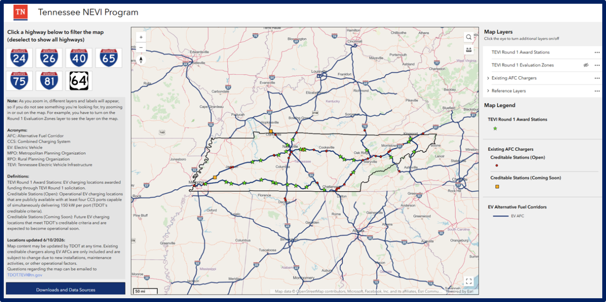

Interactive web map visualizing alternative fuel corridors and siting criteria in Tennessee.
Before this application, applicants and planners had no easy way to verify whether a candidate EV charging site actually met the federal NEVI program's technical requirements. Site eligibility depended on several overlapping spatial rules at once: distance to a qualifying interchange along one of six designated highway corridors, confirmed three-phase power availability from the correct local utility, and location relative to existing compliant chargers so grant funding fills real coverage gaps rather than duplicating existing infrastructure. None of that lived in one place. Verifying a single candidate site meant cross-referencing a federal corridor designation list, a patchwork of utility service territories, and a manually tracked list of existing charger locations and their compliance status, spread across 1,283 miles of interstate and highway corridor statewide.
I built this as a public-facing ArcGIS Experience Builder application, so applicants, utilities, and planning staff could self-serve site eligibility checks instead of routing every question through the agency. I built and deployed it solo for the Tennessee Department of Transportation's NEVI program.
The app is built around one idea: every rule that decides whether a site is eligible for funding should be something a user can see and check on the map itself, not something they have to look up separately.
Rather than dropping a user into a blank statewide map, the app leads with clickable highway filters (I-40, I-24, I-75, and the state's other designated corridors) that zoom straight to the relevant corridor, since almost every real user question starts with a specific route, not the whole state.
The core eligibility rule, within one mile of a qualifying interchange, is computed as an actual network drive-distance polygon rather than a circular buffer, so the eligibility boundary reflects the road network a driver would actually use, not straight-line distance. For the state's one non-limited-access designated corridor, I split it into 25-mile segments to enforce the program's 50-mile maximum charger spacing rule directly in the map geometry, rather than leaving it as a written policy someone has to check by hand.
Local power company service territories are shown directly on the map, so an applicant can immediately see which utility to contact about three-phase power rather than looking it up separately. Federal disadvantaged community designations are shown as their own layer too, since they factor directly into how competitive funding applications are scored. Existing NEVI-compliant fast chargers are shown with their port count and power level, so a user can see, corridor by corridor, where compliant charging already exists and where a 50-mile gap still needs to be filled.
Clicking any interchange, corridor segment, or charger surfaces the exact attributes someone needs to act on, interchange name and county, assigned utility, existing charger specs and compliance status, so the map functions as a lookup tool, not just a static reference graphic.
A federal infrastructure funding program is only as effective as its ability to get compliant, well-placed projects funded quickly, and every hour an applicant spends manually verifying eligibility criteria is an hour not spent on an actual project.
Maps, charts, and key outputs from the project. Click any image to view full size.